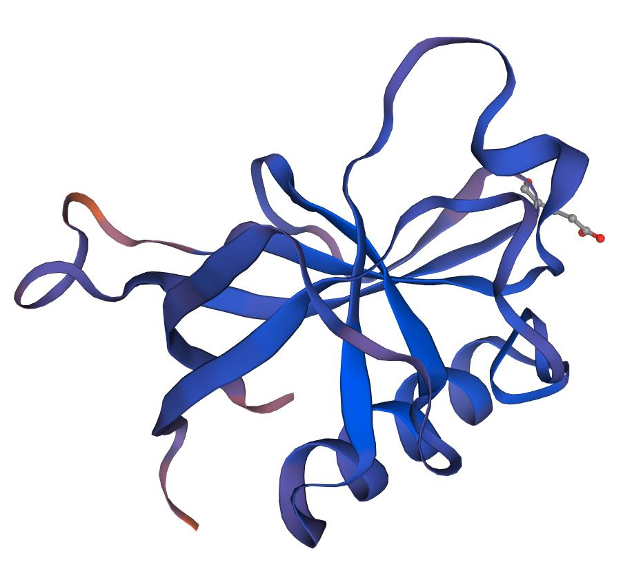

- Team
- Project
- Lab
- Model
- Parts
- Improvement
- Contributions
- Judging

In this system, Enemy are expected to secrete xylanase that hydrolyze xylan contained in the medium to produce arabinose, then attack Player by activating the arabinose induced suicide pathway in them. An ara operon is introduced in this part. With arabinose binding to araC and then the dimer of araC-arabinose combines with promoter PBAD, activating the downstream expression. To prove the arabinose-Induced Suicide System can work successfully, relE was added in the downstream (Fig. 1).
The lipid accumulation was also measured at 72 hours following dilution. In this time point, the culture had reached the stationary phase, and LDs were clearly detectable with Nile red staining for all tested strains, including the wild-type (Fig 2B). Lipid accumulation is known to increase in S. cerevisiae cells upon nutrient depletion (Werner-Washburne et al., 1993), and our results reveal that the difference between wild-type and TAG lipase deletion strains is considerably reduced in the stationary phase cells (Fig 2B). In the 72-hour time point, we did not observe a statistically significant difference between wild-type and the single tgl4Δ or double tgl3Δ tgl4Δ deletion cells. Single deletion of TGL3, which had the largest effect in the 24-hour time point, also led to increased LD staining intensity at 72 hours. We observed the highest intracellular lipid levels with the triple tgl3Δ tgl4Δ tgl5Δ deletion strain, and interestingly, in this time point, the zwf1Δ strain had considerably lower LD staining, comparable to the level of the wild-type strain (Fig 2B). Although the lipid levels of zwf1Δ strain were not lower in the 24-hour time point, ZWF1 deletion could be expected to result in decreased lipid synthesis, as Zwf1 is required to regenerate NADPH, a critical cofactor in fatty acid synthesis. Taken together, by preventing TAG degradation with triple deletion of TAG lipases, we have achieved a considerable increase in lipid production compared to the wild-type strain.

In this system, red light was used to regulate the expression of AHL, which can bind to luxR, activating the expression of downstream relE (Pathway a). Since the red-light sensing system we used has already been verified by 2018 UCAS-China, and in our previous experiments, the functional validation of relE has also been demonstrated, thereby only the rest of the parts in this pathway, AHL-induced suicide system, needed verifying. Therefore, to verify the AHL-induced suicide system in Enemy, a constitutive promoter was used to initiate the expression of luxI. (Pathway b). LuxR can bind to AHL specifically, which is encoded by luxI, thereby activating the expression of genes after Prlux. We inserted relE in the downstream of Prlux, an AHL-induced promotor, and drew a growth curve to examine the expression of relE. Therefore, to verify the inhibiting effect of relE, a series of AHL-containing bacteria supernatant were added into our engineered bacteria as our experimental group. According to Fig. 3A, compared to the control group, the growth and reproduction of E. coli cells in the experimental group were repressed. Apart from this, plate-spreading experiment was also conducted to demonstrate the repressive function of relE (Fig. 3B). The result suggests that relE has inhibitory effects on our engineered bacteria.
